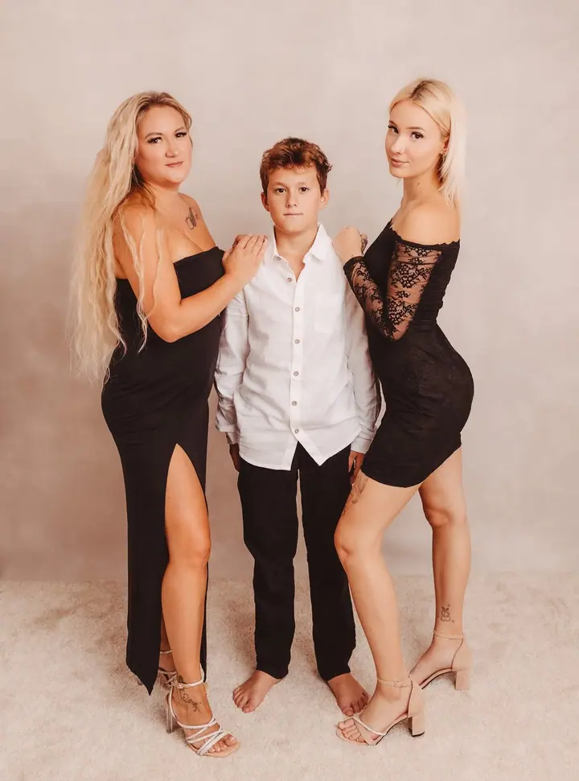
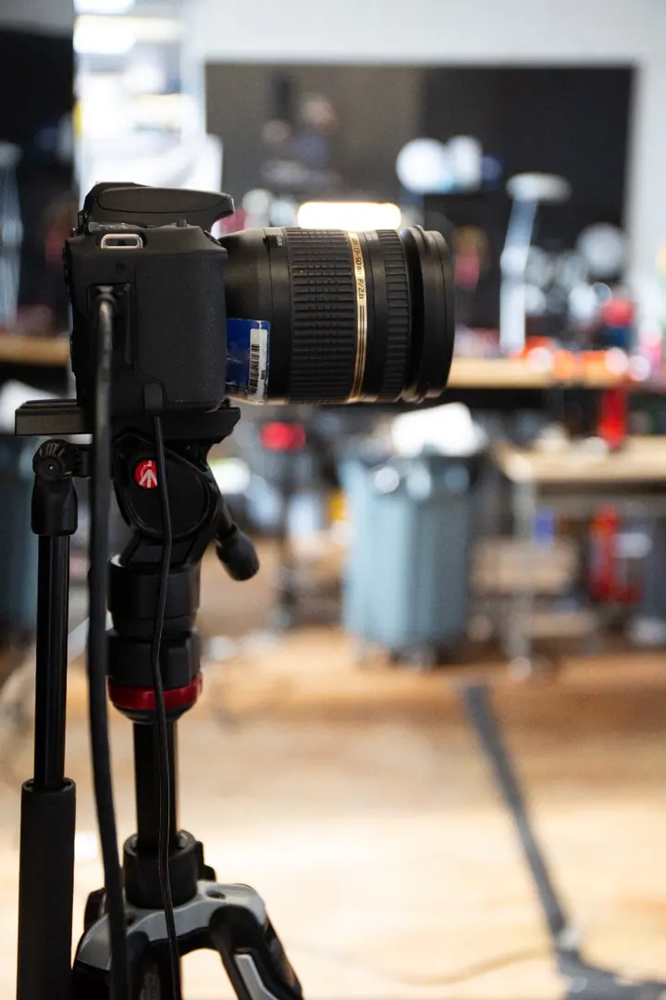
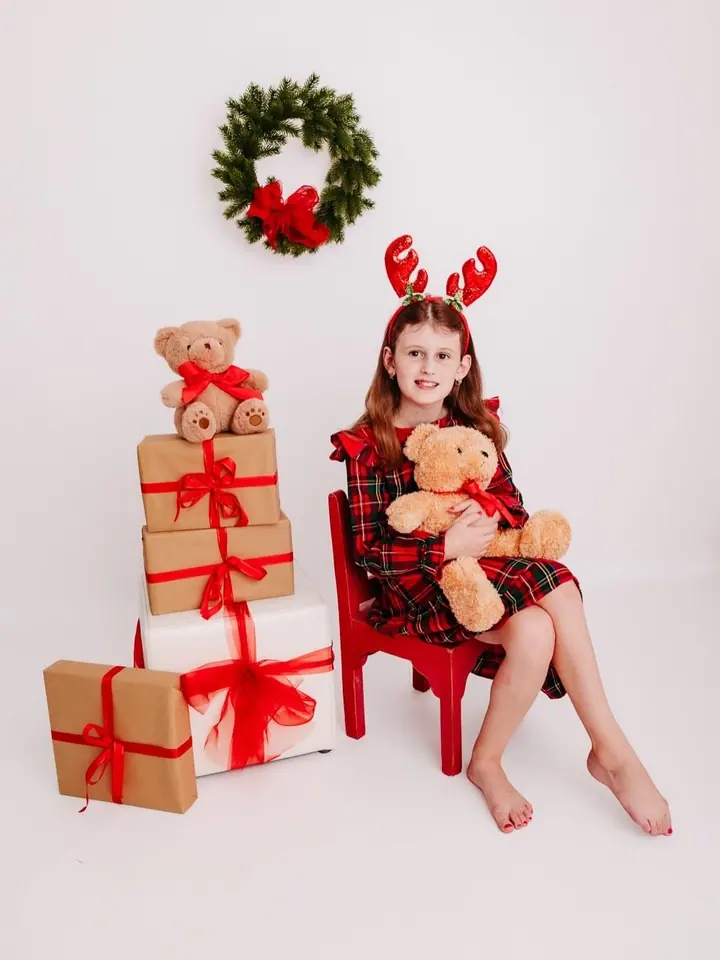

01 / 04
Rodinné focení
Hravé focení celé rodiny bez trápení, venku v přírodě nebo u mě v ateliéru. Fotky, na které se budete rádi dívat i za dlouhá léta.
Zeptat se na termín→





Hravé focení bez trápení
Zeptat se na termín →(01) Ahoj
Jmenuji se Dita Vodák Frajdlová a fotím rodiny , děti a miminka na Vysočině. Mám vlastní ateliér v Chotěboři , ale stejně ráda vyrazím s vámi ven do přírody . U mě se focení nemusíte bát, děláme ho hravě a bez trápení.
801lidí sleduje mou práci na Instagramu
1 710příspěvků s fotkami a příběhy
10let za objektivem
(02) Co fotím
01 / 04
Hravé focení celé rodiny bez trápení, venku v přírodě nebo u mě v ateliéru. Fotky, na které se budete rádi dívat i za dlouhá léta.
Zeptat se na termín→02 / 04
Klidné focení miminka v ateliéru v Chotěboři. Na děti jsem zvyklá a o miminko se během focení ráda postarám sama.
Zeptat se na termín→03 / 04
Památka na čas, kdy se na miminko teprve těšíte. Fotíme samotnou maminku i s partnerem, venku nebo v ateliéru.
Zeptat se na termín→Dále nabízím
Sezónní focení v připravených dekoracích v ateliéru. Termíny si rezervujete přímo v online kalendáři.
↗(03) Portfolio
Kliknutím fotku zvětšíte · fotografie jsou ilustrační
(04) Postup
Od první zprávy po hotovou galerii.
Krok 1 z 4
Volný termín si vyberete v mém online rezervačním kalendáři. Když si nejste jistí, napište mi přes formulář, Messenger nebo WhatsApp.
Krok 2 z 4
Společně vybereme, jestli budeme fotit v ateliéru v Chotěboři, nebo venku. Poradím vám i s oblečením a s tím, co vzít s sebou.
Krok 3 z 4
Focení probíhá v klidu a bez stresu. Děti si u mě hrají, a když se něco nepovede, prostě to zkusíme znovu.
Krok 4 z 4
Po focení dostanete náhledy, ze kterých si vyberete své oblíbené. Ty pro vás pečlivě upravím.

Ten čas uteče, vzpomínky zůstanou
(05) Za objektivem
Jmenuji se Dita a jsem máma dvou úžasných holčiček. Moc dobře vím, že v rodině jste to většinou vy, kdo hlídá rodinnou paměť. Když focení nezařídíte, ten čas prostě uteče. Jsem tu proto, abych vám s tím pomohla.
Lásku k focení mám v sobě od dětství. Dodnes si pamatuji večery, kdy jsem se s tatínkem zavírala do zatemněné koupelny a sledovala, jak se ve vývojce pomalu klubou naše vzpomínky. Byla to pro mě magie.
Fotím už 10 let a mám vlastní ateliér v Chotěboři. Fotím rodiny, těhotné maminky, miminka, školky, oslavy i svatby po celé Vysočině, hlavně kolem Chotěboře, Havlíčkova Brodu a Pelhřimova.
Dita
Dita Vodák Frajdlová · Rodinná fotografka z Vysočiny
Vůbec ne. Formulář klidně použijte jen s dotazem na focení, ceny nebo cokoli jiného. K ničemu se tím nezavazujete.
Pro rok 2026 nabízím balíčky MINI za 950 Kč (5 fotek), MALÝ za 1 800 Kč (10 fotek), STŘED za 2 800 Kč (20 fotek) a VELKÝ za 4 800 Kč (40 fotek).
Mám ateliér na adrese Krále Jana 432 v Chotěboři. Venku fotím po Vysočině, nejčastěji kolem Chotěboře, Havlíčkova Brodu a Pelhřimova.
Ano, nabízím dárkové poukazy. Stačí mi napsat a poukaz vám připravím.
(07) Kontakt
Napište pár vět o tom, co si představujete, a termín, který se vám hodí.
dibiba@seznam.cz